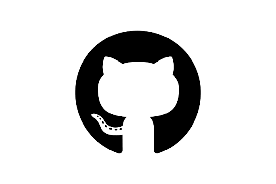

My Experience
My professional journey so far. Each experience has helped me learn, grow, and contribute to meaningful projects.
Career
Work Experience

IMAGE
2024 – Present
Open Source / GitHub Contributor
GitHub · Remote
View Detail
- GitHub Contributions: Actively contributing to various personal and open-source projects, focusing on full-stack web development and responsive UI design.
- Version Control & Collaboration: Effectively utilizing Git for branch management, code reviews, and maintaining comprehensive repositories with solid documentation.
- Continuous Development: Regularly exploring new frameworks and technologies by building live projects, strengthening problem-solving and clean coding practices.
IMAGE
Jul 2025 – Aug 2025
Web Development Intern
Euphoria GenX · Kolkata, India (On-site)
View Detail
- Developed a full-stack Student Attendance Tracker project, gaining hands-on experience with Python, Django, and Bootstrap.
- Built responsive and user-friendly web interfaces while applying full-stack development concepts to live projects.
- Strengthened frontend and backend skills by following software development practices in a professional team environment.
IMAGE
Jun 2025 – Jul 2025
Python Developer Intern
YBI Foundation · Remote
View Detail
- Gained practical exposure to Python programming, data analysis, and AI machine learning fundamentals through structured learning modules.
- Successfully completed a capstone project focused on Exploratory Data Analysis with Python and regression modelling.
- Strengthened problem-solving skills and built a solid foundation in Python built-in data types and machine learning concepts.
Education
Education

IMAGE
2026 – Present
Master of Computer Applications (MCA)
KGEC · MAKAUT
- Status: Pursuing
- Secured WBJECA Rank 43

IMAGE
2023 – 2026
Bachelor of Computer Applications (BCA)
Global College of Science and Technology · MAKAUT
- CGPA: 8.74
- Secured 1st rank of 3rd year semester exam in department

IMAGE
2023
Higher Secondary (Arts with Computer Application)
Karimpur Jagannath High School · WBCHSE
- Percentage: 91%
- Secured 3rd rank in school

IMAGE
2021
Secondary (10th Grade)
Karimpur Jagannath High School · WBBSE
- Percentage: 83%
"Every project is an opportunity to learn something new and build something impactful."— Ankan Biswas